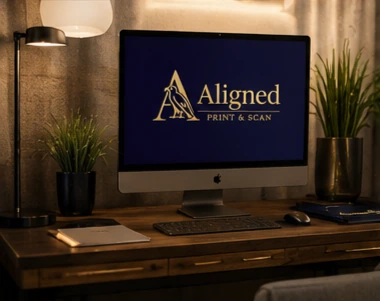
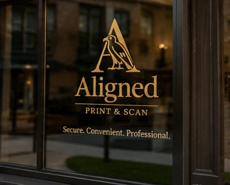

Secure Document & Notary Solutions
Remote Online & Mobile Notary Services
Secure document and notarization services designed for modern convenience — available online throughout Texas or in person by appointment.
Our Services
Modern notary and document support, arranged around your needs.
Remote Online Notary
Complete secure notarizations online through a live audio-video session with a Texas commissioned Remote Online Notary.
Mobile Notary
Professional in-person notarization services available by appointment at homes, offices, healthcare facilities, and agreed meeting locations.
Print, Scan & Document Support
Professional document printing, scanning, uploads, organization, and secure document support services.
Loan Signing Services
Professional loan signing support currently in preparation as we expand our service offerings.
How RON Works
Remote Online Notary Made Simple
A guided digital process for clients who need a secure online notarization without a mobile appointment.


Document Support
Professional print, scan, and file support.
Professional document support services designed to assist with printing, scanning, uploads, organization, and digital document preparation needs.
Explore Document ServicesMobile Service
In-person notarization by appointment.
Professional mobile notarization services available by appointment throughout the local service area.
View Mobile NotaryAbout Aligned
Modern Document Solutions With A Professional Approach
Aligned Print & Scan provides secure document and notarization services designed to support both digital convenience and professional in-person service needs.
Our approach combines modern technology, organized workflows, and professional service standards to deliver a seamless client experience across remote online notarization, mobile notary services, and document support solutions.
Security & Technology
Built For Secure Digital Workflows
Our systems are designed to support secure digital document handling, organized workflows, and professional remote online notarization services using modern technology and compliant processes.

Ready to begin?
Professional document solutions designed for modern convenience.
